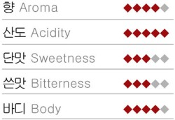
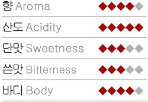
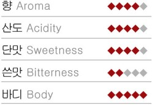
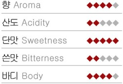

에티오피아 남부 시다모 현안의 예가체프 지역 고지대에서 재배하는 커피이다. 에티오피아 커피 중 가장 세련된 커피라 평가된다. 예가체프의 향기는 제대로 맡아본 사람이 아니면 도저히 상상만으로 떠올릴 수 없을 정도이다. 향 때문에 유명해진 것이라고도 말할 수 있다. 부드러우면서 짙은 꽃향기, 목넘김 이후에 남는 아련한 향, 부드러운 바디, 달콤한 신맛 등 예가체프를 최고의 커피라 부르는 이유는 많다.
일반적으로 과실의 상쾌한 신맛과 초콜릿의 달콤함, 그리고 와인에 비유되는 향미와 깊은 맛을 가진 것으로 평가된다. 참고로 한정된 예가체프를 비싸게 수출하려는 사람들이 소량만을 블랜딩하여 판매하기도 한다.
Yemen Mocha Mattari
아라비아 반도의 남서에 위치한 예멘은 ‘초록의 아라비아’라고 부를 만큼 중동 아랍권에서 초록이 풍부하며 비도 풍족한 나라이다. 커피를 뜻하는 오랜 닉네임인 모카는 이 지역의 작은 항구도시로 커피를 수출입하던 장소였는데 지금은 사용되지 않는 곳이 되었다.
예멘 중에서도 베니마타르 지역에서 생산하는 최고급 품종의 커피를 가리켜 ‘모카 마타리’라 부른다. 자메이카 블루 마운틴, 하와이안 코나와 더불어 세계 3대 프리미엄 커피로 인정받고 있다. 또한 반 고흐가 좋아한 커피로 알려져 있기도 하다. 고흐의 팬들은 ‘그와 소통하는 길은 마타리를 마시는 길밖에 없다’고 말하며 즐겨 마신다고 한다. 묵직한 바디감, 새콤한 맛과 쓴맛의 환상적인 조화, 진한 다크 초콜릿 향이 매력이다.
Jamaica Blue Mountain
카리브해 북부 서인도 제도에 위치한 자메이카의 동쪽 블루 마운틴 지역에서 생산되는 커피로 세계 3대 커피 중 하나이다. 영국 왕실과 엘리자베스 여왕이 즐겨 마시는 커피로 알려지면서 ‘커피의 황제’라는 칭호를 얻었다. 서늘한 기후와 빈번한 안개, 풍부한 강수량, 빗물이 투과되는 토질까지 천혜의 환경을 가진 덕분에 최상의 커피가 재배된다.
옅은 신맛과 와인처럼 쌉싸래한 맛, 부드러운 쓴맛, 단맛과 스모크한 맛까지 여러 커피가 지니는 맛들을 골고루 지녀 완벽한 조화를 이룬다. 소량 재배를 원칙으로 해발 2,000m 이상에서 재배되는 커피에만 블루 마운틴이라 칭하고, 모든 공정을 수작업으로 하여 최고의 맛을 유지하고 있다. 수확시기는 8~9월이고 습식법으로 가공한다. 생두는 크기가 크고 선명한 황갈색을 띠며 로스팅은 보통 정도로 한다.
Indonesia Sumatra Mandheling
유럽에서 인기가 높은 만델링은 중남미 커피에 비해 부드러우면서도 강한 농도를 가진 커피이다. 수마트라 섬의 특별한 토양으로 인해 초콜릿 맛과 고소하고 달콤한 향이 난다.
묵직하고 강렬한 바디를 가지며 풍부한 향이 난다. 그리하여 카페에서 드립 커피 중 바디가 좋은 커피를 원하면 흔히 추천해주는 커피로, 덕분에 입안에 꽉 차오르는 느낌이 있고 신맛은 약하지만 금방 사라지는 쓴맛 뒤에 단맛까지 느낄 수 있다. 개성 있는 커피의 맛을 원하면 후회하지 않을 커피이다. 뒷맛의 여운이 오래도록 남는다.